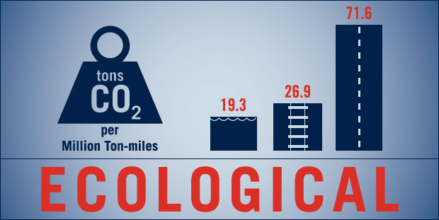

The Port's Environmental Impact

By increasing focus on port services, trade and logistics we are able to reduce the carbon footprint of our area.
Inland barge transportation is the greener way to go. It produces fewer emissions of carbon dioxide per ton of cargo moved compared to ground or rail transport – rail transport emits 39% more CO2 and ground transport emits 371% more CO2.
The EPA estimates that 33% of our nation's annual carbon dioxide emissions come from transportation activities.
Reducing Greenhouse gas emissions is just one environmental impact. Waterborne transportation not only carries goods more quickly, easily and efficiently, it will also save a valuable resource – fuel. With gas prices rising and affecting everyone, the maritime highways offer a more fuel-efficient, cost effective mode of transportation.
Ninety percent of domestic cargoes traveling on roads are tractor-trailers; smaller niche ports have the opportunity to penetrate into that market, not only decreasing the environmental impact, but also increasing the economic development of the port's home city and surrounding distribution areas.
Model Freight Use and Standard Capacity:
- Barge Dry Bulk – 1,750 tons
- Rail Bulk Car – 110 tons
- Highway Tractor-Trailer – 25 tons
2009 Total Freight Flow By Mode – Florida:
- Truck – 452 million tons (73%)
- Rail – 76 million tons (12%)
- Water – 93 million tons (15%)
- Air – 1 million tons (<0.1%)
One barge can carry 27,500 barrels of liquid cargo. It would take 46 rail cars or 144 trucks to equal that amount.
Some statistics from the National Waterways Foundation – a study conducted by the Texas Transportation Institute.
Copyright © 2012 SOS Pensacola. All rights reserved. Sponsored by Pensacola Propeller Club – Bay Area Port of Historic Pensacola
Sponsored by Pensacola Propeller Club – Bay Area Port of Historic Pensacola